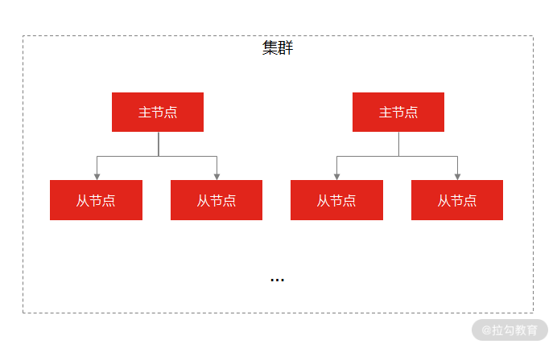
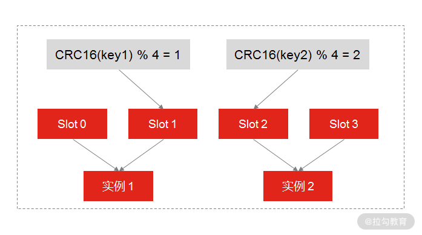

- 00 开篇词 中高级研发面试，逃不开架构设计这一环.md.html
- 01 研发工程师想提升面试竞争力，该具备这三个技术认知.md.html
- 02 研发工程师如何用架构师视角回答架构设计方案？.md.html
- 03 面试官如何考察与 CAP 有关的分布式理论？.md.html
- 04 亿级商品存储下，如何深度回答分布式系统的原理性问题？.md.html
- 05 海量并发场景下，如何回答分布式事务一致性问题？.md.html
- 06 分布式系统中，如何回答锁的实现原理？.md.html
- 07 RPC：如何在面试中展现出“造轮子”的能力？.md.html
- 08 MQ：如何回答消息队列的丢失、重复与积压问题.md.html
- 08 案例串联 如何让系统抗住双十一的预约抢购活动？.md.html
- 09 如何回答 MySQL 的索引原理与优化问题？.md.html
- 10 如何回答 MySQL 的事务隔离级别和锁的机制？.md.html
- 11 读多写少：MySQL 如何优化数据查询方案？.md.html
- 12 写多读少：MySQL 如何优化数据存储方案？.md.html
- 13 缓存原理：应对面试你要掌握 Redis 哪些原理？.md.html
- 14 缓存策略：面试中如何回答缓存穿透、雪崩等问题？.md.html
- 15 如何向面试官证明你做的系统是高可用的？.md.html
- 16 如何从架构师角度回答系统容错、降级等高可用问题？.md.html
- 17 如何向面试官证明你做的系统是高性能的？.md.html
- 18 如何从架构师角度回答怎么应对千万级流量的问题？.md.html
- 19 彩蛋 互联网架构设计面试，你需要掌握的知识体系.md.html
- 结束语 程序员的道、术、势.md.html
- 捐赠
13 缓存原理：应对面试你要掌握 Redis 哪些原理？
这一讲我们聊一聊与 Redis 有关的话题。
提及缓存，就不得不提 Redis，Redis 已经是现在使用最广泛的缓存中间件了，这一讲，我以 Redis 的原理为切入点，带你了解在面试过程中那些与 Redis 原理有关的题目，帮你捋清答题思路，抓住重点。
案例背景
我们现在就模拟一场面试，假如我是面试官，你是候选人，我问你：
Redis 属于单线程还是多线程？
这道题其实就在考察 Redis 的线程模型（这几乎是 Redis 必问的问题之一）。
案例分析
很多初级研发工程师基本都知道 Redis 是单线程的，并且能说出 Redis 单线程的一些优缺点，比如，实现简单，可以在无锁的情况下完成所有操作，不存在死锁和线程切换带来的性能和时间上的开销，但同时单线程也不能发挥多核 CPU 的性能。
很明显，如果你停留在上面的回答思路上，只能勉强及格，因为对于这样一道经典的面试题，你回答得没有亮点，几乎丧失了机会。一个相对完整的思路应该基于 Redis 单线程，补充相关的知识点，比如：
- Redis 只有单线程吗？
Redis 是单线程的，主要是指 Redis 的网络 I/O 线程，以及键值的 SET 和 GET 等读写操作都是由一个线程来完成的。但 Redis 的持久化、集群同步等操作，则是由另外的线程来执行的。
- Redis 采用单线程为什么还这么快？
一般来说，单线程的处理能力应该要比多线程差才对，但为什么 Redis 还能达到每秒数万级的处理能力呢？主要有如下几个原因。
首先，一个重要的原因是，Redis 的大部分操作都在内存中完成，并且采用了高效的数据结构，比如哈希表和跳表。
其次，因为是单线程模型避免了多线程之间的竞争，省去了多线程切换带来的时间和性能上的开销，而且也不会导致死锁问题。
最后，也是最重要的一点， Redis 采用了 I/O 多路复用机制（参考 07 讲，这里不再赘述）处理大量的客户端 Socket 请求，这让 Redis 可以高效地进行网络通信，因为基于非阻塞的 I/O 模型，就意味着 I/O 的读写流程不再阻塞。
但是因为 Redis 不同版本的特殊性，所以对于 Redis 的线程模型要分版本来看。
Redis 4.0 版本之前，使用单线程速度快的原因就是上述的几个原因；
Redis 4.0 版本之后，Redis 添加了多线程的支持，但这时的多线程主要体现在大数据的异步删除功能上，例如 unlink key、flushdb async、flushall async 等。
Redis 6.0 版本之后，为了更好地提高 Redis 的性能，新增了多线程 I/O 的读写并发能力，但是在面试中，能把 Redis 6.0 中的多线程模型回答上来的人很少，如果你能在面试中补充 Redis 6.0 多线程的原理，势必会增加面试官对你的认可。
你可以在面试中这样补充：
虽然 Redis 一直是单线程模型，但是在 Redis 6.0 版本之后，也采用了多个 I/O 线程来处理网络请求，这是因为随着网络硬件的性能提升，Redis 的性能瓶颈有时会出现在网络 I/O 的处理上，所以为了提高网络请求处理的并行度，Redis 6.0 对于网络请求采用多线程来处理。但是对于读写命令，Redis 仍然使用单线程来处理。
当然了， “Redis 的线程模型”只是 Redis 原理中的一个考点，如果你想做足准备，回答好 Redis 相关的问题，还需前提掌握 Redis 的主线知识点。我从高性能、高可用的角度出发，把 Redis 的核心原理考点梳理成一张图（之所以整理这样的体系结构，是因为你最容易在以下的考点中出错、踩坑，也是为了便于你的记忆）：

Redis 高性能和高可用的核心考点
从图中，你可以看到，线程模型只是高性能考点中的一环，而高可用考点中，包括了持久化、数据复制（主从复制，哨兵复制）等内容。所以在讲完 Redis 的线程模型的考点之后，接下来咱们再来了解持久化和数据复制的考点。
关于持久化和数据复制，面试官不会问得很直白，比如“Redis 的持久化是怎么做的？”而是立足在某一个问题点：
- Redis 是如何实现数据不丢失的（考察持久化）？
- Redis 是如何实现服务高可用的（考察数据复制）？
案例解答
Redis 如何实现数据不丢失？
我们知道，缓存数据库的读写都是在内存中，所以它的性能才会高，但在内存中的数据会随着服务器的重启而丢失，为了保证数据不丢失，要把内存中的数据存储到磁盘，以便缓存服务器重启之后，还能够从磁盘中恢复原有的数据，这个过程就是 Redis 的数据持久化。
这也是 Redis 区别于其他缓存数据库的优点之一（比如 Memcached 就不具备持久化功能）。Redis 的数据持久化有三种方式。
- AOF 日志（Append Only File，文件追加方式）：记录所有的操作命令，并以文本的形式追加到文件中。
- RDB 快照（Redis DataBase）：将某一个时刻的内存数据，以二进制的方式写入磁盘。
- 混合持久化方式：Redis 4.0 新增了混合持久化的方式，集成了 RDB 和 AOF 的优点。
接下来我们看一下这三种方式的实现原理。
AOF 日志是如何实现的？
通常情况下，关系型数据库（如 MySQL）的日志都是“写前日志”（Write Ahead Log, WAL），也就是说，在实际写数据之前，先把修改的数据记到日志文件中，以便当出现故障时进行恢复，比如 MySQL 的 redo log（重做日志），记录的就是修改后的数据。
而 AOF 里记录的是 Redis 收到的每一条命令，这些命令是以文本形式保存的，不同的是，Redis 的 AOF 日志的记录顺序与传统关系型数据库正好相反，它是写后日志，“写后”是指 Redis 要先执行命令，把数据写入内存，然后再记录日志到文件。

AOF 执行过程
那么面试的考察点来了：Reids 为什么先执行命令，在把数据写入日志呢？为了方便你理解，我整理了关键的记忆点：
- 因为 ，Redis 在写入日志之前，不对命令进行语法检查；
- 所以，只记录执行成功的命令，避免了出现记录错误命令的情况；
- 并且，在命令执行完之后再记录，不会阻塞当前的写操作。
当然，这样做也会带来风险（这一点你也要在面试中给出解释）。
- 数据可能会丢失： 如果 Redis 刚执行完命令，此时发生故障宕机，会导致这条命令存在丢失的风险。
- 可能阻塞其他操作： 虽然 AOF 是写后日志，避免阻塞当前命令的执行，但因为 AOF 日志也是在主线程中执行，所以当 Redis 把日志文件写入磁盘的时候，还是会阻塞后续的操作无法执行。
又因为 Redis 的持久化离不开 AOF 和 RDB，所以我们就需要学习 RDB。
那么 RDB 快照是如何实现的呢？
因为 AOF 日志记录的是操作命令，不是实际的数据，所以用 AOF 方法做故障恢复时，需要全量把日志都执行一遍，一旦日志非常多，势必会造成 Redis 的恢复操作缓慢。
为了解决这个问题，Redis 增加了 RDB 内存快照（所谓内存快照，就是将内存中的某一时刻状态以数据的形式记录在磁盘中）的操作，它即可以保证可靠性，又能在宕机时实现快速恢复。
和 AOF 不同的是，RDB 记录 Redis 某一时刻的数据，而不是操作，所以在做数据恢复时候，只需要直接把 RDB 文件读入内存，完成快速恢复。
以上是 RDB 的主要原理，这里存在两个考点。
- RDB 做快照时会阻塞线程吗？
因为 Redis 的单线程模型决定了它所有操作都要尽量避免阻塞主线程，所以对于 RDB 快照也不例外，这关系到是否会降低 Redis 的性能。
为了解决这个问题，Redis 提供了两个命令来生成 RDB 快照文件，分别是 save 和 bgsave。save 命令在主线程中执行，会导致阻塞。而 bgsave 命令则会创建一个子进程，用于写入 RDB 文件的操作，避免了对主线程的阻塞，这也是 Redis RDB 的默认配置。
- RDB 做快照的时候数据能修改吗？
这个问题非常重要，考察候选人对 RDB 的技术掌握得够不够深。你可以思考一下，如果在执行快照的过程中，数据如果能被修改或者不能被修改都会带来什么影响？
- 如果此时可以执行写操作：意味着 Redis 还能正常处理写操作，就可能出现正在执行快照的数据是已经被修改了的情况；
- 如果此时不可以执行写操作：意味着 Redis 的所有写操作都得等到快照执行完成之后才能执行，那么就又出现了阻塞主线程的问题。
那Redis 是如何解决这个问题的呢？ 它利用了 bgsave 的子进程，具体操作如下：
- 如果主线程执行读操作，则主线程和 bgsave 子进程互相不影响；
- 如果主线程执行写操作，则被修改的数据会复制一份副本，然后 bgsave 子进程会把该副本数据写入 RDB 文件，在这个过程中，主线程仍然可以直接修改原来的数据。

Redis 是如何保证执行快照期间数据可修改
要注意，Redis 对 RDB 的执行频率非常重要，因为这会影响快照数据的完整性以及 Redis 的稳定性，所以在 Redis 4.0 后，增加了 AOF 和 RDB 混合的数据持久化机制： 把数据以 RDB 的方式写入文件，再将后续的操作命令以 AOF 的格式存入文件，既保证了 Redis 重启速度，又降低数据丢失风险。
我们来总结一下，当面试官问你“Redis 是如何实现数据不丢失的”时，你首先要意识到这是在考察你对 Redis 数据持久化知识的掌握程度，那么你的回答思路是：先说明 Redis 有几种持久化的方式，然后分析 AOF 和 RDB 的原理以及存在的问题，最后分析一下 Redis 4.0 版本之后的持久化机制。
Redis 如何实现服务高可用？
另外，Redis 不仅仅可以用来当作缓存，很多时候也会直接作为数据存储，那么你就要一个高可用的 Redis 服务，来支撑和保证业务的正常运行。那么你怎么设计一个不宕机的 Redis 高可用服务呢？
思考一下，解决数据高可用的手段是什么？是副本。那么要想设计一个高可用的 Redis 服务，一定要从 Redis 的多服务节点来考虑，比如 Redis 的主从复制、哨兵模式，以及 Redis 集群。这三点是你一定要在面试中回答出来的。
- 主从同步 (主从复制)
这是 Redis 高可用服务的最基础的保证，实现方案就是将从前的一台 Redis 服务器，同步数据到多台从 Redis 服务器上，即一主多从的模式，这样我们就可以对 Redis 做读写分离了，来承载更多的并发操作，这里和 MySQL 的主从复制原理上是一样的。
- Redis Sentinel（哨兵模式）
在使用 Redis 主从服务的时候，会有一个问题，就是当 Redis 的主从服务器出现故障宕机时，需要手动进行恢复，为了解决这个问题，Redis 增加了哨兵模式（因为哨兵模式做到了可以监控主从服务器，并且提供自动容灾恢复的功能）。

哨兵模式
- Redis Cluster（集群）
Redis Cluster 是一种分布式去中心化的运行模式，是在 Redis 3.0 版本中推出的 Redis 集群方案，它将数据分布在不同的服务器上，以此来降低系统对单主节点的依赖，从而提高 Redis 服务的读写性能。

集群
Redis Cluster 方案采用哈希槽（Hash Slot），来处理数据和实例之间的映射关系。在 Redis Cluster 方案中，一个切片集群共有 16384 个哈希槽，这些哈希槽类似于数据分区，每个键值对都会根据它的 key，被映射到一个哈希槽中，具体执行过程分为两大步。
- 根据键值对的 key，按照 CRC16 算法计算一个 16 bit 的值。
- 再用 16bit 值对 16384 取模，得到 0~16383 范围内的模数，每个模数代表一个相应编号的哈希槽。
剩下的一个问题就是，这些哈希槽怎么被映射到具体的 Redis 实例上的呢？有两种方案。
- 平均分配： 在使用 cluster create 命令创建 Redis 集群时，Redis 会自动把所有哈希槽平均分布到集群实例上。比如集群中有 9 个实例，则每个实例上槽的个数为 16384⁄9 个。
- 手动分配： 可以使用 cluster meet 命令手动建立实例间的连接，组成集群，再使用 cluster addslots 命令，指定每个实例上的哈希槽个数，为了方便你的理解，我通过一张图来解释数据、哈希槽，以及实例三者的映射分布关系。

Redis 手动分配哈希槽
示意图中的分片集群一共有 3 个实例，假设有 4 个哈希槽时，我们就可以通过命令手动分配哈希槽，比如实例 1 保存哈希槽 0 和 1，实例 2 保存哈希槽 2 和 3。
然后在集群运行的过程中，key1 和 key2 计算完 CRC16 值后，对哈希槽总个数 5 进行取模，再根据各自的模数结果，就可以被映射到对应的实例 1 和实例 3 上了。
我们再来总结一下，主从同步是 Redis 高可用最基础的服务高可用方案，但它当发生故障时，需要手动恢复故障，因此就有了哨兵模式用于监控和实现主从服务器的自动容灾。最后我讲了目前最常用的高可用方案 Redis 集群，这三种高可用方式都是你需要掌握的。
总结
这一讲，我讲了 Redis 的三个核心问题：线程模型、数据持久化，以及高可用，我想强调这样几个重点：
- 对于线程模型的知识点，你要分开三条线进行理解（Redis 4.0 之前、Redis 4.0 之后，以及 Redis 6.0）。
- 对于数据持久化，你要掌握 Redis 持久化的几种方案，AOF 和 RDB 的原理，以及为了弥补他们的缺点，Redis 增加了混合持久化方式，以较小的性能开销保证数据的可靠性。
- 实现高可用的三种手段：主从同步、哨兵模式和 Redis 集群服务，对于 Redis 集群，你要掌握哈希槽的数据分布机制，以及自动分配和手动分配的实现原理 。
最后，我还要强调一下，Redis 是应聘初中级研发工程师必问的知识点，它是目前缓存数据库的代名词，所以对于 Redis 知识点的掌握，无论是在面试过程中，还是在实际的工作中，都是经常要用到的。
© 2019 - 2023 Liangliang Lee. Powered by gin and hexo-theme-book.